Iizuka
Iizuka · Fukuoka
Iizuka
Highlighted on the Fukuoka map.
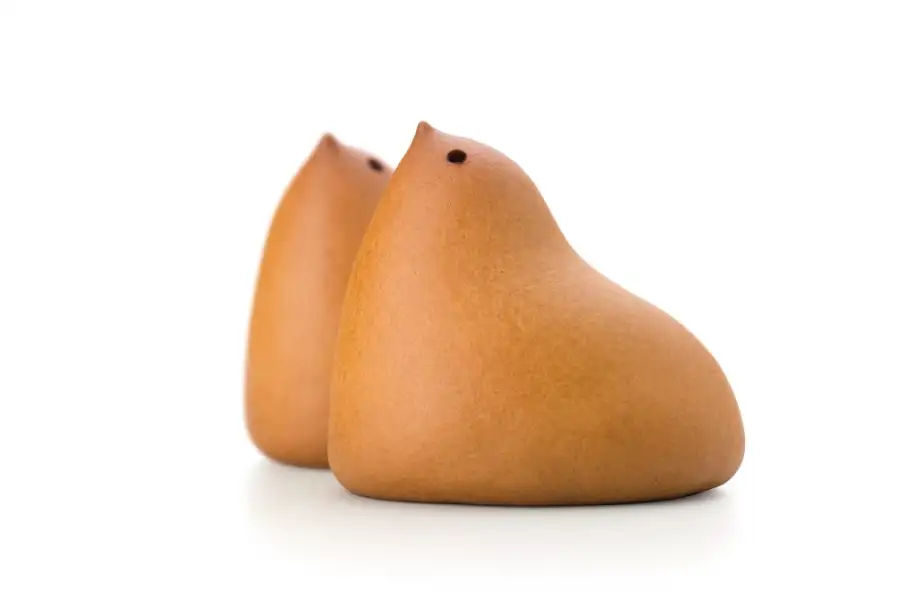
Sights
Hiyo Ko Honami Kojo
Aso Ora So Autumn Leaves Tokubetsu Kokai
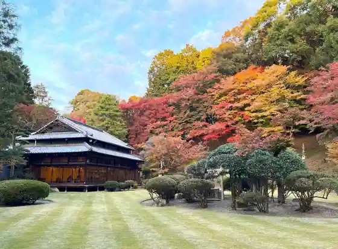
Ko no Yu Onsen
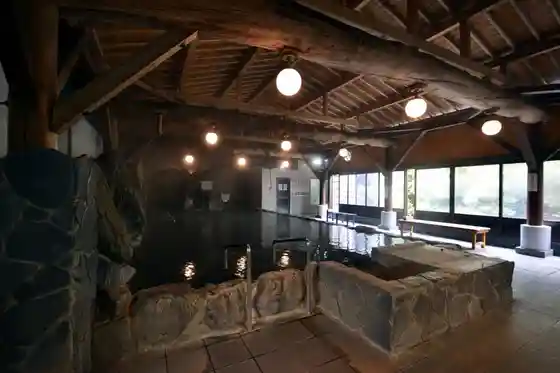
Kyu Ito Den'emon Tei
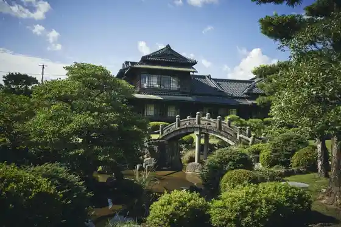
Yagiyama no Unkai
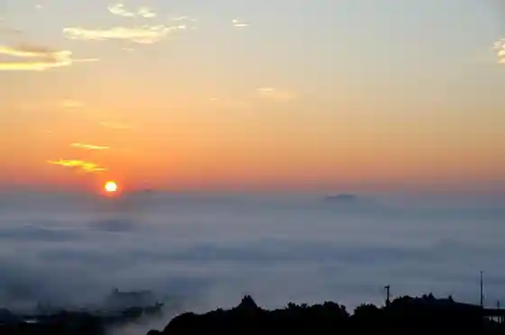
Onga Kawanaka no Shima no Kosumosu
Bota Yama / Kyu Sumitomo Tadakuma Tanko
Pikunika Kyowakoku
Sambirejji Akane
Kakao Kenkyusho
Kaho Gekijo
Iizuka Supotsu Resort Za Ritoriito
Taisho Jin Park
Iizuka Culture Hall Iizukakosumosukomon
Chikuho Green Park
Sho Seisei Kofun Park
Nagasaki Kaido Hiyamizu Toge
Kawashima Kofun Park
Dining
や台ずし 飯塚バスターミナル町
Ya Dai Zushi Iizuka Basutaaminaru Machi
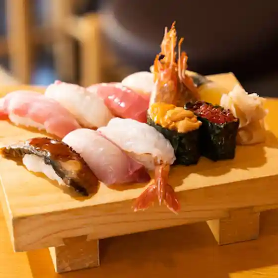
創作寿司ダイニングかい
Sousaku Sushi Dainingu Kai
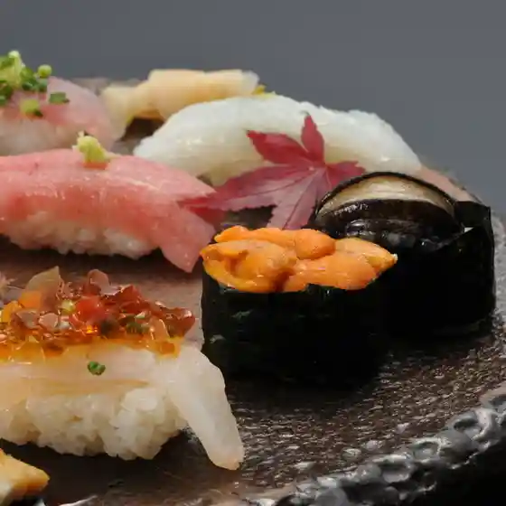
居酒屋 二代目 きんぐ
Izakaya Nidaime Kingu
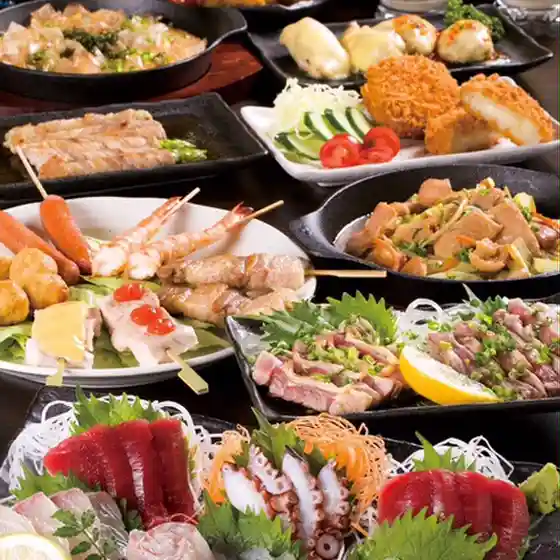
竹乃家
Take No Ie
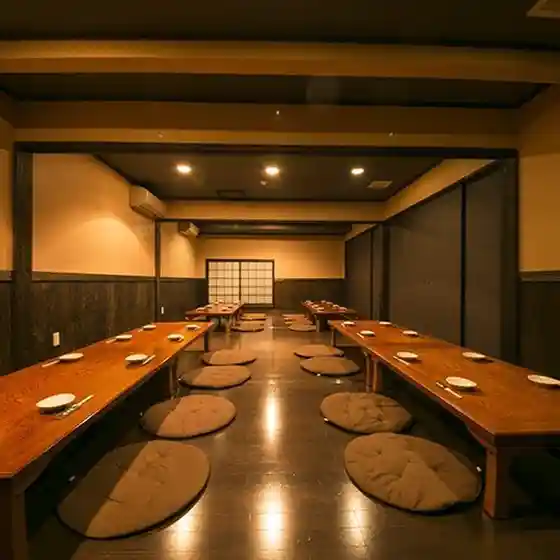
牛角 飯塚店
Gyuukaku Iizuka Mise

ダイニングルーム あんど
Daininguruumu Ando
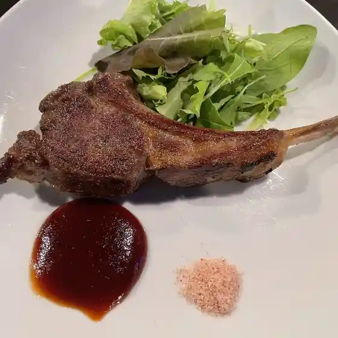
炉ばた 高
Ro Bata Taka
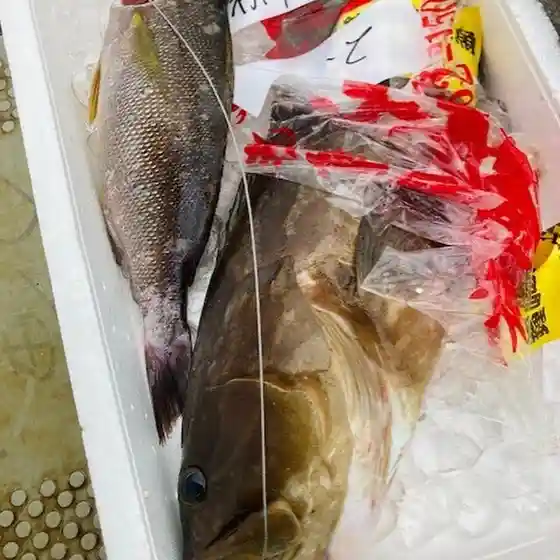
のがみ大飯店
Nogami Ooi Mise
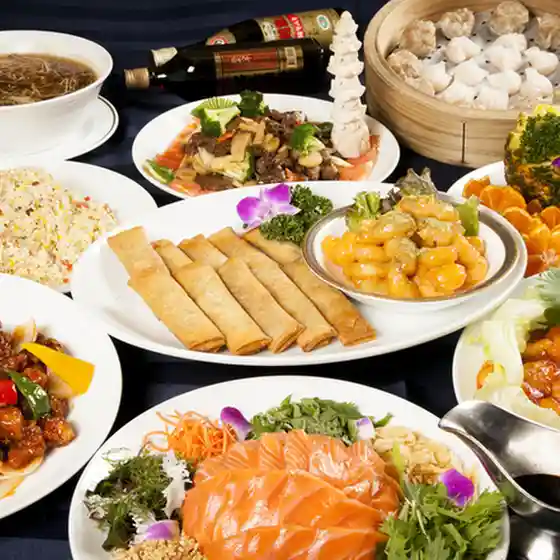
本場インド料理 ルパ 飯塚店
Honba Indo Ryouri Rupa Iizuka Mise
千成
Sennari
寿司万
Sushi Man
コリアンハウス洪苑 穂波店
Korianhausu Kou En Honami Mise
焼鳥ゆとり
Yakitori Yutori
モダニスト キュイジーヌ レストラン ヒダカ
Modanisuto Kyuijiinu Resutoran Hidaka
俺の店!
Ore No Mise !
赤崎牛直営店 le lien Charcoal Restaurant
Akasaki Ushi Chokueiten Le Lien Charcoal Restaurant
焼肉一の屋
Yakiniku Ichi No Ya
本場インド料理 ルパ 穂波店
Honba Indo Ryouri Rupa Honami Mise
俺のギョーザ
Ore No Gyooza
フェリーチェ バジル 飯塚店
Feriiche Bajiru Iizuka Mise
焼肉ソウル
Yakiniku Souru
小さな韓国 あぷろ 飯塚店
Chiisa Na Kankoku Apuro Iizuka Mise
il cuore
Il Cuore
炭バル ダブル
Sumi Baru Daburu
がまんできない♥ユウのはんばーぐ
Gamandekinai ♥ Yuu Nohanbaagu
えびちゃん 勝盛店
Ebichan Katsumori Mise
鉄板焼 梛座
Teppanyaki Nagi Za
ジンギスバル 滝川本店
Jingisubaru Takikawa Honten
ステーキビストロ Waltz
Suteekibisutoro Waltz
たらふく亭
Tarafuku Tei
しゃぶしゃぶ温野菜 飯塚店
Shabushabu Onyasai Iizuka Mise
てんぷら藤
Tenpura Fuji
のがみプレジデントホテル 和食処 日本海
Nogami Purejidentohoteru Washoku Tokoro Nihonkai
いちよし
Ichiyoshi
口福堂 ゆめタウン飯塚店
Koufuku Dou Yume Taun Iizuka Mise
あぐらの離れ
Agurano Hanare
炭火居酒屋 竜丸
Sumibi Izakaya Tatsumaru
大助うどん 川津店
Daisuke Udon Kawatsu Mise
ザ・リトリート
Za・Ritoriito
つばめ食堂
Tsubame Shokudou
ちろりん村とくるみの木
Chirorin Mura Tokurumino Ki
おむすび＆寿司 ひいらぎ
Omusubi & Sushi Hiiragi
鰻の成瀬 飯塚八木山店
Unagi No Naruse Iizuka Yagiyama Mise
アール-ガーデン
Aaru - Gaaden
蕎麦切倭人
Sobakiri Wajin
焼鳥 嵐
Yakitori Arashi
シャルロット
Sharurotto
田園
Den'En
ビジネスホテルセンチュリー
Bijinesuhoterusenchurii
京都 伊三郎製ぱん 新飯塚店
Kyouto Isaburou Sei Pan Shin Iizuka Mise
駒や 飯塚店
Koma Ya Iizuka Mise
クレープハウス
Kureepuhausu
たこやき ももや
Takoyaki Momoya
キッチン 日愛
Kitchin Nichi Ai
REVO
Revo
タカアキ
Takaaki
レイダック
Reidakku
グルメ寿司 貫べえ 飯塚店
Gurume Sushi Kan Bee Iizuka Mise
たこ本家
Tako Honke
からあげ まんてん 下三緒店
Karaage Manten Shita San O Mise
Onosho Iizuka Fukuoka Prefecture Kyushu
Onosho Iizuka Fukuoka Prefecture Kyushu
Onosho Iizuka Fukuoka Prefecture Kyushu
Onosho Iizuka Fukuoka Prefecture Kyushu
Onosho Iizuka Fukuoka Prefecture Kyushu
Onosho Iizuka Fukuoka Prefecture Kyushu
Onosho Iizuka Fukuoka Prefecture Kyushu
Onosho Iizuka Fukuoka Prefecture Kyushu
Kaiten Sushi Ichitaro Iizuka Fukuoka Prefecture Kyushu
Kaiten Sushi Ichitaro Iizuka Fukuoka Prefecture Kyushu
Kaiten Sushi Ichitaro Iizuka Fukuoka Prefecture Kyushu
Kaiten Sushi Ichitaro Iizuka Fukuoka Prefecture Kyushu
Kaiten Sushi Ichitaro Iizuka Fukuoka Prefecture Kyushu
Kaiten Sushi Ichitaro Iizuka Fukuoka Prefecture Kyushu
Kaiten Sushi Ichitaro Iizuka Fukuoka Prefecture Kyushu
Kaiten Sushi Ichitaro Iizuka Fukuoka Prefecture Kyushu
Yakiniku No Mr Aoki Iizuka Fukuoka Prefecture Kyushu
Yakiniku No Mr Aoki Iizuka Fukuoka Prefecture Kyushu
Yakiniku No Mr Aoki Iizuka Fukuoka Prefecture Kyushu
Yakiniku No Mr Aoki Iizuka Fukuoka Prefecture Kyushu
Yakiniku No Mr Aoki Iizuka Fukuoka Prefecture Kyushu
Yakiniku No Mr Aoki Iizuka Fukuoka Prefecture Kyushu
Yakiniku No Mr Aoki Iizuka Fukuoka Prefecture Kyushu
Yakiniku No Mr Aoki Iizuka Fukuoka Prefecture Kyushu
Akaneso Iizuka Fukuoka Prefecture Kyushu
Akaneso Iizuka Fukuoka Prefecture Kyushu
Akaneso Iizuka Fukuoka Prefecture Kyushu
Akaneso Iizuka Fukuoka Prefecture Kyushu
Akaneso Iizuka Fukuoka Prefecture Kyushu
Akaneso Iizuka Fukuoka Prefecture Kyushu
Akaneso Iizuka Fukuoka Prefecture Kyushu
Akaneso Iizuka Fukuoka Prefecture Kyushu
Yozan Iizuka Fukuoka Prefecture Kyushu
Yozan Iizuka Fukuoka Prefecture Kyushu
Yozan Iizuka Fukuoka Prefecture Kyushu
Yozan Iizuka Fukuoka Prefecture Kyushu
Yozan Iizuka Fukuoka Prefecture Kyushu
Yozan Iizuka Fukuoka Prefecture Kyushu
Yozan Iizuka Fukuoka Prefecture Kyushu
Yozan Iizuka Fukuoka Prefecture Kyushu
Agura No Hanare Iizuka Fukuoka Prefecture Kyushu
Agura No Hanare Iizuka Fukuoka Prefecture Kyushu
Agura No Hanare Iizuka Fukuoka Prefecture Kyushu
Agura No Hanare Iizuka Fukuoka Prefecture Kyushu
Agura No Hanare Iizuka Fukuoka Prefecture Kyushu
Agura No Hanare Iizuka Fukuoka Prefecture Kyushu
Agura No Hanare Iizuka Fukuoka Prefecture Kyushu
Agura No Hanare Iizuka Fukuoka Prefecture Kyushu
Taiheiraku Iizuka Fukuoka Prefecture Kyushu
Taiheiraku Iizuka Fukuoka Prefecture Kyushu
Taiheiraku Iizuka Fukuoka Prefecture Kyushu
Taiheiraku Iizuka Fukuoka Prefecture Kyushu
Taiheiraku Iizuka Fukuoka Prefecture Kyushu
Taiheiraku Iizuka Fukuoka Prefecture Kyushu
Taiheiraku Iizuka Fukuoka Prefecture Kyushu
Taiheiraku Iizuka Fukuoka Prefecture Kyushu
Ishida Ichiryu Iizuka Iizuka Fukuoka Prefecture Kyushu
Ishida Ichiryu Iizuka Iizuka Fukuoka Prefecture Kyushu
Ishida Ichiryu Iizuka Iizuka Fukuoka Prefecture Kyushu
Ishida Ichiryu Iizuka Iizuka Fukuoka Prefecture Kyushu
Ishida Ichiryu Iizuka Iizuka Fukuoka Prefecture Kyushu
Ishida Ichiryu Iizuka Iizuka Fukuoka Prefecture Kyushu
Ishida Ichiryu Iizuka Iizuka Fukuoka Prefecture Kyushu
Ishida Ichiryu Iizuka Iizuka Fukuoka Prefecture Kyushu
Taikichi Iizuka Fukuoka Prefecture Kyushu
Taikichi Iizuka Fukuoka Prefecture Kyushu
Taikichi Iizuka Fukuoka Prefecture Kyushu
Taikichi Iizuka Fukuoka Prefecture Kyushu
Taikichi Iizuka Fukuoka Prefecture Kyushu
Taikichi Iizuka Fukuoka Prefecture Kyushu
Taikichi Iizuka Fukuoka Prefecture Kyushu
Taikichi Iizuka Fukuoka Prefecture Kyushu
Gochisoya Mutsugoro Iizuka Fukuoka Prefecture Kyushu
Gochisoya Mutsugoro Iizuka Fukuoka Prefecture Kyushu
Gochisoya Mutsugoro Iizuka Fukuoka Prefecture Kyushu
Gochisoya Mutsugoro Iizuka Fukuoka Prefecture Kyushu
Gochisoya Mutsugoro Iizuka Fukuoka Prefecture Kyushu
Gochisoya Mutsugoro Iizuka Fukuoka Prefecture Kyushu
Gochisoya Mutsugoro Iizuka Fukuoka Prefecture Kyushu
Gochisoya Mutsugoro Iizuka Fukuoka Prefecture Kyushu
Stay
のがみプレジデントホテル
Nogami Purejidentohoteru
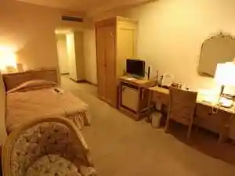
新飯塚ステーションホテル
Shin Iizuka Suteeshonhoteru
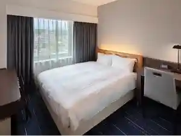
ホテルニューガイア飯塚
Hoterunyuugaia Iizuka
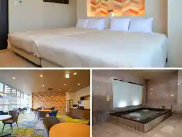
ＨＯＴＥＬ Ｒ９ Ｔｈｅ Ｙａｒｄ 飯塚
H O T E L R 9 T H E Y A R D Iizuka
HOTEL AZ 福岡飯塚店
Hotel Az Fukuoka Iizuka Mise
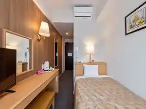
福岡 ホテル＆リゾートグランピング ザ・リトリート
Fukuoka Hoteru & Rizootoguranpingu Za・Ritoriito
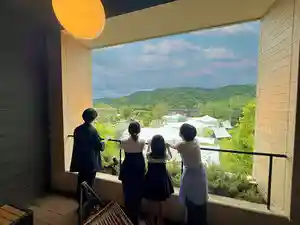